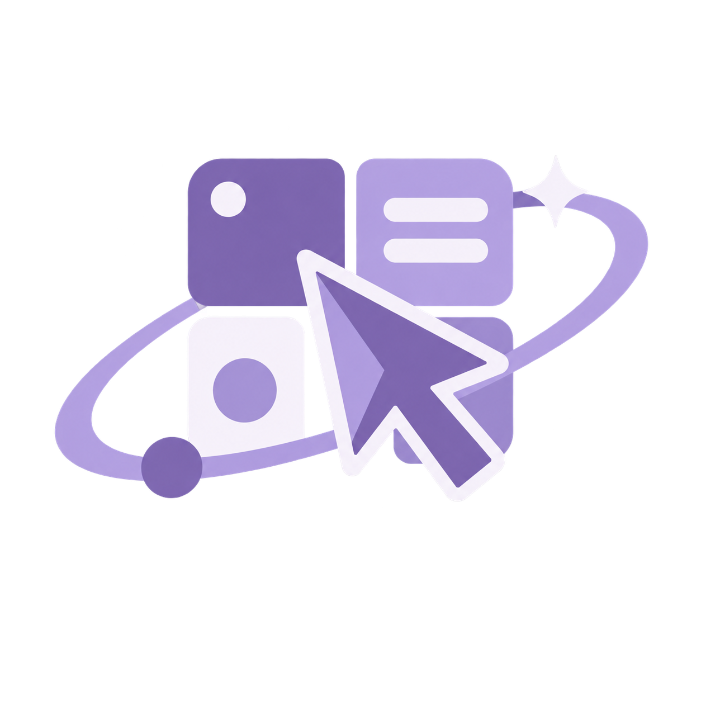
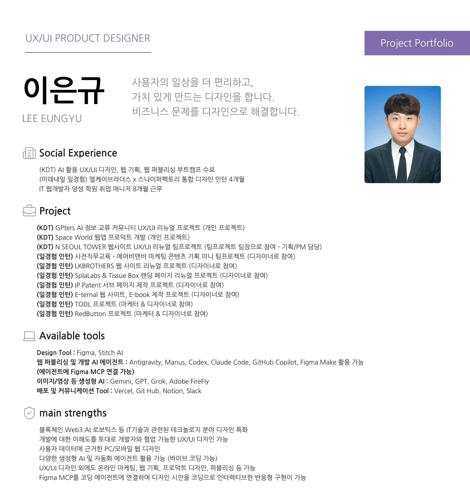
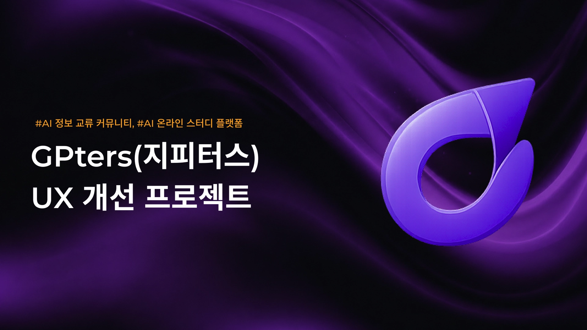
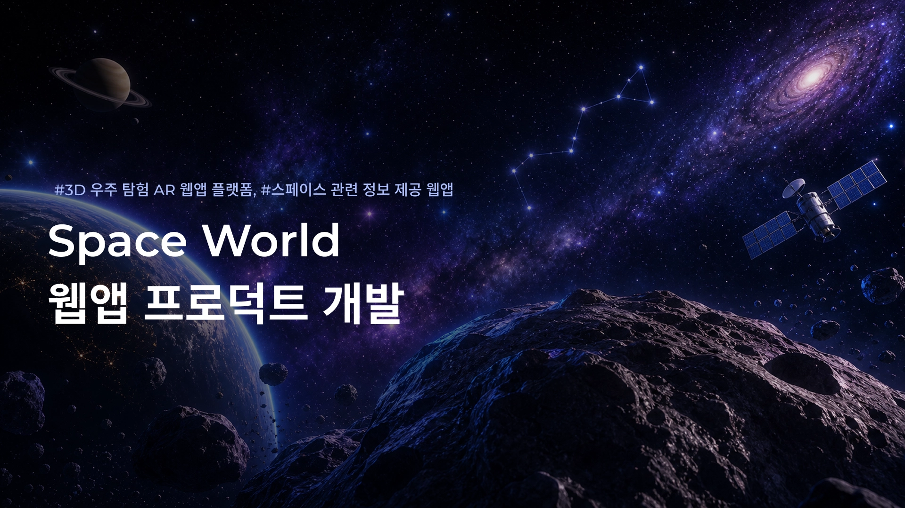
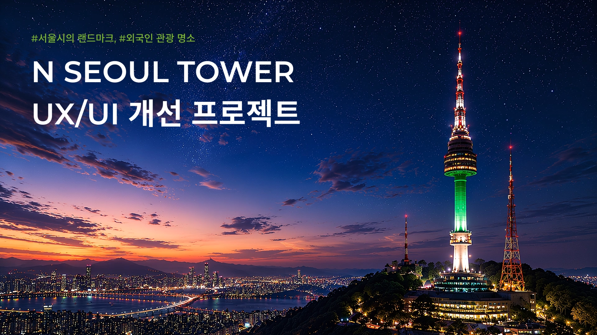
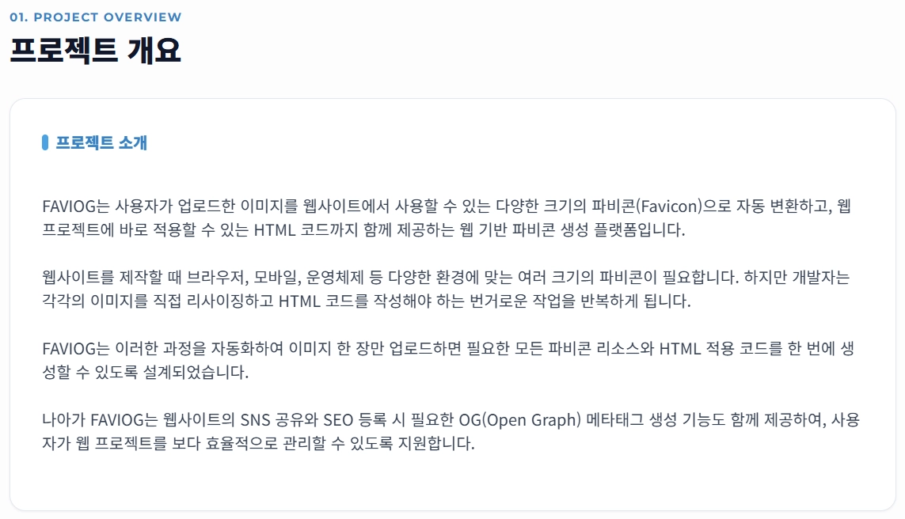

PDF OPEN ↗
PDF OPEN ↗
01 · INTERNSHIPLKBROTHERS
LKBROTHERS
Product Portfolio
Web3·블록체인·AI 기업에서 4개월간 7개 브랜드의 마케팅 기획, 와이어프레임, UX/UI, 콘텐츠와 퍼블리싱을 수행했습니다.
- Product UX/UI
- Strategy
- Contents

LEE EUNGYUNOTION ↗SERVICE PLANNER · PRODUCT UX/UI DESIGNER
“왜?”에는 기획으로,
“어떻게?”에는 UI로 답합니다.

DESIGN × LOGICHELLO, I’M EUNGYU.
UX/UI와 콘텐츠 디자인을 중심으로 서비스 기획, 웹 퍼블리싱, AI 에이전트 활용까지 연결합니다. 사용자 데이터에 근거한 구조와 브랜드 감각을 함께 설계하며, 기획부터 디자인·개발·배포까지 실제 작동하는 결과로 완성합니다.
문제를 정의하고 구조를 세워, 사용자가 만질 수 있는 화면까지 연결한 프로젝트입니다.
PDF OPEN ↗
Web3·블록체인·AI 기업에서 4개월간 7개 브랜드의 마케팅 기획, 와이어프레임, UX/UI, 콘텐츠와 퍼블리싱을 수행했습니다.

LIVE ↗생성형 AI 커뮤니티의 정보 구조와 웹 경험 리뉴얼.

LIVE ↗서비스 흐름부터 UI, 구현까지 완성한 웹앱 프로덕트.

LIVE ↗랜드마크의 오프라인 경험을 디지털 여정으로 재구성.

USE ↗파비콘과 OG 코드를 한 번에 만드는 바이브 코딩 프로덕트.
문제 정의, 사용자 조사, IA, UX 전략, 유저 플로우를 논리적으로 설계합니다.
PC·Tablet·Mobile을 아우르는 반응형 UI와 브랜드 경험을 만듭니다.
IR, 회사소개서, 브로슈어부터 제안·설득·발표까지 메시지를 명확히 전달합니다.
Figma MCP와 AI 에이전트를 연결해 디자인에서 배포까지 빠르게 실행합니다.
HTML·CSS·JavaScript 이해를 바탕으로 인터랙티브한 반응형 화면을 구현합니다.
MY OPERATING SYSTEM
“저의 사회 경험은 ‘저’라는 프로덕트를 시장에 빠르게 출시해 검증하고, 피드백으로 고도화하는 과정이었습니다.”
저는 사회생활을 시작하면서 제 경험을 ‘저’라는 프로덕트를 시장에서 검증하는 과정이라고 생각했습니다. 프로덕트가 MVP를 먼저 출시한 뒤 사용자 피드백을 바탕으로 개선되듯, 다양한 조직과 직무를 빠르게 경험하며 강점과 부족한 점을 확인했습니다.
각 경험은 끝이 아니라 다음 단계를 위한 데이터였습니다. 목표는 크게 세우되 실행은 빠르게 하며, 어떤 방식으로 일할 때 가장 좋은 성과를 내는지 발견해 왔습니다.
사회복지 전공과 NGO 활동은 사람을 이해하고 설득하는 법을, 문서 작성 경험은 정보를 구조화하고 논리적으로 전달하는 법을 가르쳐 주었습니다. 취업 매니저 경험을 통해 기업과 교육생을 연결하며 협업과 실무 커뮤니케이션을 익혔습니다.
프로덕트 디자인 인턴 과정에서는 생성형 AI와 에이전트를 활용해 서비스 기획, 콘텐츠, 마케팅 아이디어를 실행하며 디자인을 비즈니스 관점으로 확장했습니다.
실패 역시 다음 선택을 위한 중요한 데이터였습니다. 다양한 경험으로 넓이를 확장한 지금, 그 경험을 하나로 연결해 깊이 있는 전문성을 만들고 있습니다.
비즈니스를 이해하고 논리적 설계 위에 사용자 경험을 더하는 UX/UI 기획 디자이너로서, “왜?”에는 기획으로, “어떻게?”에는 UI로 답하겠습니다.
NEXT MISSION?